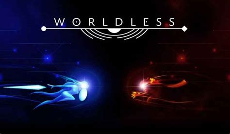
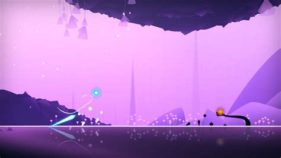
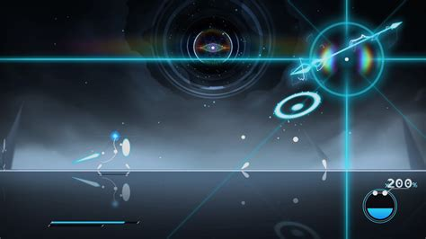

STEAM CLEAN REVIEW
Worldless

Worldless is a beautiful, stylish metroidvania with incredible combat, haunting music and vibes for days. The game tells the story of a newly formed universe and the struggles of those born into it. Created by Noname Studio and with music from Berlinist it weaves a minimalist tale that uses minimal dialogue and environmental storytelling.
Quick Facts
- Completed: 14/02/2024
- Hours Played Overall: 176 at least
- Achievement Progress: 24/24
- Steam Clean Size: WEEKEND
- Genre: Metroidvania
Should You Play In 2026?
Absolutely!
Worldless was one of the biggest surprises for me and quickly became one of my favourite games of all time. Going into it, I expected a visually interesting indie game. What I found was a beautiful, challenging and incredibly rewarding experience that stayed with me long after the credits rolled.
The first thing that grabbed me was the combat. At first it can feel unusual, but once everything clicks you realise just how much depth there is underneath the surface. Every encounter becomes a small puzzle and every boss fight feels like a genuine test of everything you've learned up to that point.
Visually, Worldless is stunning. The minimalist art style gives the game a dreamlike quality and somehow manages to feel both peaceful and mysterious at the same time. Combined with the soundtrack, it creates an atmosphere unlike anything else I've played.
What I really appreciate is how much the game respects the player. It rarely holds your hand and trusts you to explore, experiment and gradually master its systems. That can occasionally lead to moments where you're not entirely sure where to go next, but personally I found that sense of discovery part of the appeal.
The late game is where Worldless truly shines. The tougher encounters and optional challenges demand mastery of the combat system and pull off that rare trick of being difficult without feeling unfair. Few games have given me the same sense of satisfaction after finally overcoming a challenge.
If you enjoy exploration, challenging combat and unique indie experiences, Worldless is an easy recommendation. It won't be for everyone, but for me it became one of the defining games of The Steam Clean and comfortably earned its place in the Hall of Fame.

What I Loved
- Boss battles
- Combat system
- Visual style
- Character progression
What Didn't Work
- Navigation can occasionally be confusing
- Early game can feel slow for some players
Favourite Moment
Beating the games secret area and superboss. It tormented me for ages and it was so satisfying to really nail it down.
Favourite Boss / Character
Halo (Angel) - I love this fight so much it never stops being enjoyable.

Who Would Enjoy This?
If you like metroidvanais that have slick movement tech or enjoy more turn based but action orientated fights I'd recommend a look.
Steam Clean Verdict
💎 ESSENTIAL